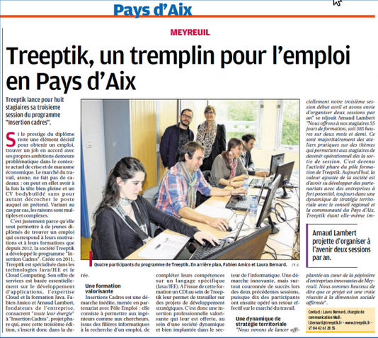
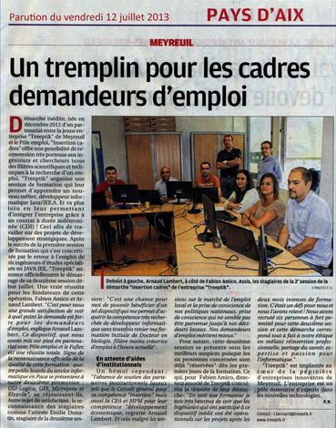
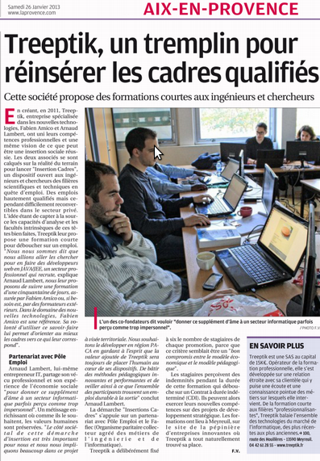

TV Region

Interview d'Arnaud Lambert, PDG de Treeptik, dans le cadre de notre recherche d'investisseurs.
19
Jan2015
LCM

La chaîne TV LCM nous a rendu visite dans nos locaux à Meyreuil pour un reportage sur le lancement de CloudUnit, notre solution PaaS Java.
24
Oct2014
La Provence

Treeptik offre des formations Java pour les ingénieurs informatique demandeurs d'emploi.
21
Oct2014
Pays d'Aix Developpement
Huit jeunes ingénieurs en informatique participent durant deux mois à la quatrième session de
9
Oct2014
Channel News
Fabien Amico à été contacté par Johann Armand rédacteur en chef du site Channelnews pour apporter son analyse sur Docker et les outils de virtualisation traditionnels.
01
Sep2014
La Provence
Treeptik, un tremplin pour l'emploi en Pays d'Aix
26
Avr2014
Pays d'Aix Developpement
Treeptik annonce officiellement le lancement de sa troisième opération INSERTION CADRES...
04
Avr2014
Silicone.fr
L'e-zine Silicone.fr cite notre plateforme CloudUnit dans le cadre d'un post sur Docker...
25
Mars2014
La Provence
Un tremplin pour les cadres demandeurs d'emploi...
12
Juil2013
Pays d'Aix Developpement
Treeptik annonce officiellement le lancement de sa deuxième opération INSERTION CADRE...
27
Juin2013
La Provence
Treeptik un tremplin pour réinsérer les cadres qualifiés...
26
Jan2013
Pays d'Aix Developpement
TreeptiK lance INSERTION CADRES un projet qui touche la création d'emplois, le développement durable et l'insertion en PACA...
25
Jan2013